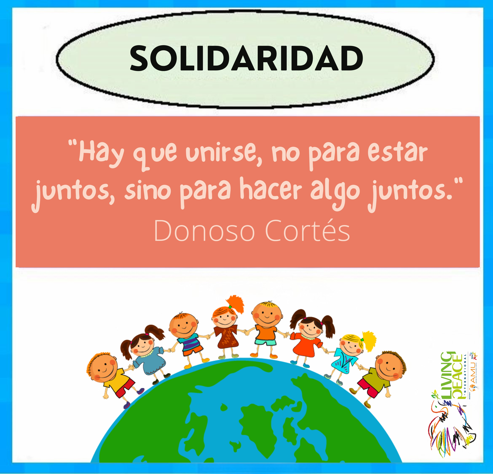

TU VALOR PARA HOY
Solidaridad
Vive esta cara como una acción concreta de paz.
VALORES · PARA LA PAZ
Lanza el dado y convierte la solidaridad, la justicia, el autocontrol, la amistad, el amor propio y el respeto en acciones cotidianas.

Vive esta cara como una acción concreta de paz.
LAS SEIS CARAS
Pulsa una tarjeta para pasar del valor escrito al gesto vivido.
“Los valores se vuelven paz cuando pasan de ser palabras a decisiones concretas.”
Solidaridad · Justicia · Respeto